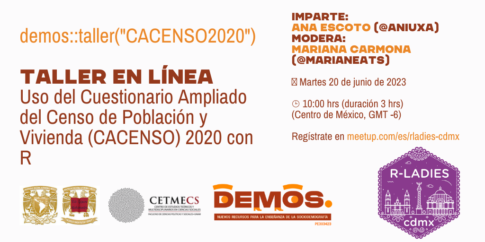
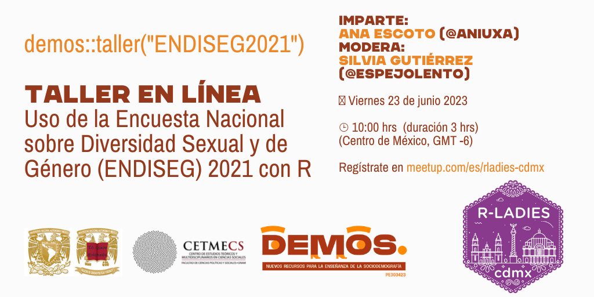
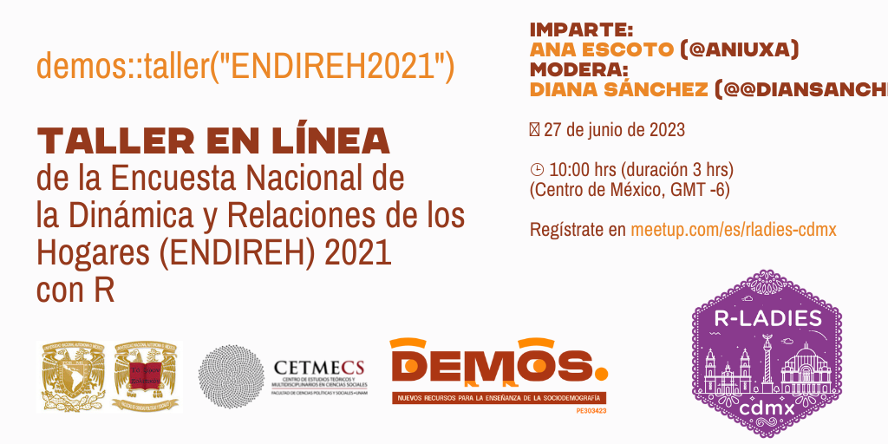

Talleres
En coordinación con el capítulo de las R-Ladies CDMX, en el mes de junio se impartirán tres talleres sobre uso de información demográfica…
demos::taller(“CACENSO2020”)

Video de la sesión
demos::taller(“ENDISEG2021”)

Video de la sesión
demos::taller(“ENDIREH2021”)

Video de la sesión
demos::taller(“ENOE”)
Este taller se impartió presencialmente en dos ocasiones.
demos::taller(“Texto”)
Este taller se impartió en línea con invitación para miembros del proyecto.